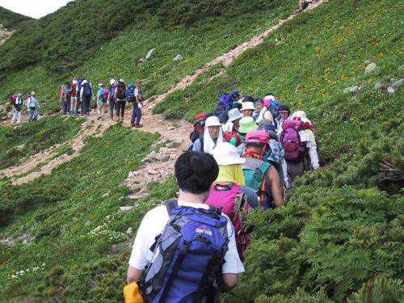
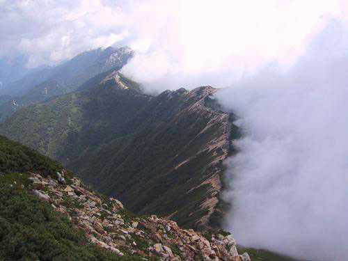

|  |
Group picture of the easy group |
The famous peak of Yarigatake |
Cramped accomodation in the hut after the first day |
|  |
The helicopter that carried Stefan out, and the last picture he took. |
MRI scan of Stefan's knee. |
To show his gratitude to the rescue people who took him out, Stefan bought this card. According to Terry it is a wedding card, ... did he want to marry the pilot? |